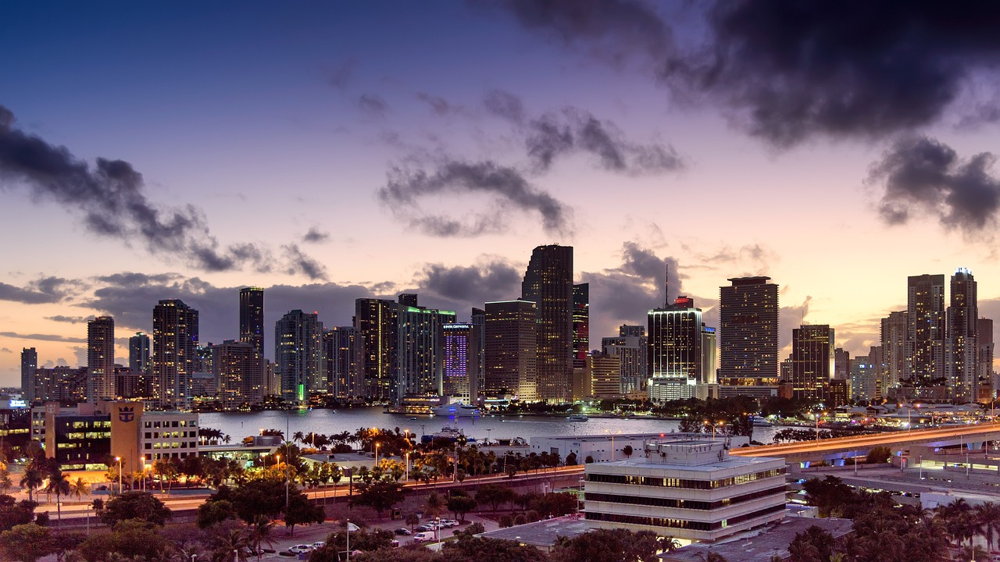

Why Are Insurance Companies Leaving Florida?
Jane Scaplen
1. Hurricane Risk
is the most hurricane-prone state in the U.S., with an average of 40% of all U.S. hurricanes making landfall there. The frequency and intensity of hurricanes have been rising, largely due to climate change. These storms cause significant damage to homes, leading to billions of dollars in claims each year. Insuring homes in Florida has become a losing proposition for many companies due to the unpredictable yet inevitable storms.
2. Rising Litigation Costs
One of the unique challenges in Florida's insurance market is the high level of litigation associated with claims. The Assignment of Benefits (AOB) abuse has been particularly problematic. Homeowners, often without fully understanding the legal process, sign over their rights to sue insurers to third parties, such as contractors or attorneys, who then inflate repair costs and file lawsuits against insurance companies. As a result, Florida accounts for a disproportionate percentage of insurance-related litigation in the U.S. A study by the Florida Office of Insurance Regulation found that the state represented 79% of the nation's homeowner insurance lawsuits, despite only accounting for 9% of claims.
3. High Reinsurance Costs
Insurance companies in Florida rely heavily on reinsurance—insurance for insurers—to spread the risk of large payouts from hurricanes and other disasters. However, the cost of reinsurance has been skyrocketing, with reinsurers raising rates significantly in response to the increased frequency and severity of storms. The inflated costs of reinsurance have made it difficult for Florida-based insurers to maintain their operations, forcing them to increase premiums or exit the market altogether.
4. Fraudulent Claims and AOB Abuse
Beyond typical hurricane damage claims, Florida's property insurance market has been plagued by fraud and abuse, primarily through the misuse of Assignment of Benefits (AOB) contracts. In these cases, contractors or repair companies take control of an insurance claim from the homeowner, allowing them to sue the insurance company directly. This has led to inflated repair bills and an overwhelming number of lawsuits, contributing to higher premiums and the withdrawal of insurers.
5. Regulatory Challenges
Florida's insurance regulations, while designed to protect consumers, have created challenges for insurance companies. The state imposes restrictions on how quickly insurers can raise rates, which limits the companies' ability to respond to rising risks and costs. Without the ability to adjust premiums to match the increasing risk of hurricanes and the cost of reinsurance, many insurers have opted to leave the state rather than face financial losses.
